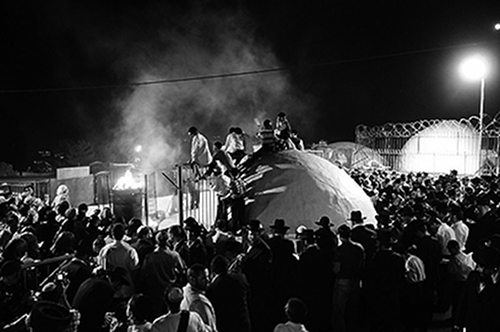

Rashbi Orders That the Alter Rebbe Be Set Free
Rabbi Shimon Bar Yochai sat at the head of the table and proceeded to appoint a Beis Din to rule on the matter and immediately paskened that Zalmanyu would be freed that very day.

With tears in his eyes, R’ Pesach’s (that is what we will call him although his name does not appear in the sources) gaze followed the black wagon until it disappeared on the horizon. He was pale as a ghost and his thin figure seemed to shrivel up even more.
He was an ardent Chassid of the tzaddik, Rabbi Menachem Mendel of Vitebsk, one of the senior disciples of the Maggid of Mezritch. His love and devotion to the tzaddik were legendary.
After R’ Menachem Mendel traveled with a large group of students to Eretz Yisroel, R’ Pesach remained behind in the town of Staradov. As the saying goes, “out of sight, out of mind,” and as time passed, R’ Pesach’s connection to the tzaddik diminished somewhat.
R’ Pesach became aware of the teachings of Rabbi Shneur Zalman, the Alter Rebbe, or as his colleagues referred to him, “Zalmanyu,” since he was the youngest talmid of the Maggid. Shortly before R’ Menachem Mendel left for Eretz Yisroel, he appointed his colleague-disciple R’ Shneur Zalman as the leader of the Chassidim in Russia and nearby countries.
The Alter Rebbe accepted this mandate, and although he too was supposed to travel to Eretz Yisroel, he turned around and returned to Russia. From that point on, his light began to illuminate Russia and beyond.
The Chabad movement grew from day to day and its pure wellsprings reached R’ Pesach, the Chassid who had remained behind. Once he tasted of these waters he devoted himself to the Alter Rebbe.
Not surprisingly then, when soldiers of the czar came to arrest the Alter Rebbe on Isru Chag Sukkos 5559/1798, R’ Pesach was thrown into a turmoil. He saw the armed soldiers ordering his beloved teacher to ascend the black wagon, the wagon designated for criminals. R’ Pesach was beside himself with anguish.
In addition to R’ Pesach, there was a large group of the Alter Rebbe’s Chassidim who also stood not far away and watched the goings-on in great distress. They understood that this was no simple matter and that their Rebbe’s life was in danger.
The wagon disappeared and the brokenhearted Chassidim returned to the beis midrash. The joy of Sukkos, the “time of our rejoicing,” had completely dissipated.
Feeling weak in the knees, R’ Pesach began to make his way to the beis midrash, but he lacked the strength and fell down in a faint. Chassidim who were standing in the vicinity rushed over to revive him. They sprinkled water on him, rubbed his temples, and shouted his name. This seemed to help, but when he opened his eyes and looked about him and remembered what had happened, he fainted once again.
This happened several times. Each time he was aroused from his faint, he recalled what had happened and fainted once again. A doctor who was rushed to the scene was concerned for his life.
A wise Chassid who was present suggested that R’ Pesach be told that the Rebbe had been released and his arrest had been nothing but a mistake. So when R’ Pesach next opened his eyes, the Chassidim said this. It seemed for a moment that he was beginning to get back to himself, but he soon sensed that he was not being told the truth and he fell unconscious once again.
Many hours passed. In the meantime, the Chassidim carried R’ Pesach into the beis midrash and lay him down on a bench. Every now and then, they would bring him back to consciousness but after a few moments he would faint again. However, as time went by, it seemed that the news was slowly being digested. It became easier to wake him up and he spent more time in a conscious state.
It took a few days before he was able to muster the strength to pack his few belongings and return to his hometown and birthplace of Staradov.
Those were dark days for the Chassidim of the Alter Rebbe. Day followed day, one week followed another, and there was still no good news from Petersburg. The Chassidim knew that a special committee had been formed that was handling the situation, but this did not help calm their nerves.
The Chassidim committed to fasting twice a week on Mondays and Thursdays until Hashem would have mercy and the Rebbe would be freed. Some Chassidim committed to fasting every day and to spending their days in prayer and the recitation of T’hillim in order to annul the evil decree.
R’ Pesach was one of those Chassidim who committed to fasting every day. You could see him sitting in a corner of the Chassidic beis midrash of Staradov wrapped in his tallis and pouring out his heart in the recitation of T’hillim. His voice was full of longing. “Those who sit in darkness and in the shadows of death, bound in affliction and iron” – his voice broke but he immediately recovered and loudly continued, “And they cried out to Hashem in their trouble; He saved them from their distress.” Then, in a voice full of emuna and bitachon he sang, “He brought them out of darkness and the deepest gloom and broke their chains.”
Other Chassidim also sat in the beis midrash. They had set times to recite T’hillim and would come and go. Only R’ Pesach remained in his place. He spent the nights in restless sleep with his head on the table.
Fifty-two days passed since the Rebbe was arrested. On Monday night, following the 18th of Kislev, the Chassidim who had fasted that day broke their fast and ate some bread so they would have the strength to fast again the next day. Someone put a bottle of mashke on the table. “It is Yud-Tes Kislev tonight,” he said, and everyone was reminded that it was the Yom Hilula of the Mezritcher Maggid, the beloved teacher of their Rebbe. For a short time it seemed that the sadness and heaviness had lifted.
The cups were filled and they wished one another “l’chaim.” They added brachos “for the redemption of our Rebbe, may he live.” One of the Chassidim repeated a teaching of the Maggid and they discussed his ways and approach to serving Hashem.
R’ Pesach was overcome with tiredness and he leaned his head on his hands and fell into a deep sleep. His body was weak and emaciated, and his health was compromised. In his soporific state he felt himself being quickly swept away to other worlds. He did not know how much time had elapsed when he suddenly saw a great light before him, shining from one end of the world to the other. Within the light appeared the image of the tzaddik, R’ Menachem Mendel of Vitebsk, his former teacher.
R’ Pesach recoiled. He lowered his gaze. Since he had become the disciple of R’ Shneur Zalman, he had not been in touch with his former teacher. Now he felt bewildered and ashamed. He tried to look up, but the light was too powerful. The compassionate voice of R’ Menachem Mendel could be heard as a distant echo, “I am not upset with you.” The words wended their way into his heart and wounded soul. How well did the tzaddik know the feelings of his heart and soul!
“I know,” said the tzaddik, “that you are a man of truth and your intentions are good, and so I will tell you what happened tonight in Gan Eden.”
Yud-Tes Kislev. The Yom Hilula of the Maggid of Mezritch. On this day, great lights belonging to this tzaddik ascend and bring his soul up from level to level in the upper Gan Eden. In honor of the day, throngs of souls of tzaddikim gathered in the chamber of the Maggid in order to hear Torah from him. In the center sat the Maggid. On his right was his teacher, Rabbi Yisroel Baal Shem Tov and on his left was the Arizal.
The Maggid said Torah for some time, novel thoughts that shone like the heavens, which aroused the spirit and stirred the soul. The souls that were present experienced indescribable spiritual bliss.
When the Maggid finished speaking, he burst into bitter tears and said, “My student Zalmanyu is sitting in jail and the teachings of Chassidus are in danger. I ask you to do an eternal favor for him.”
A commotion ensued with a mighty roar rising from the crowds, a voice beseeching Hashem for mercy for the leader of the Chassidic movement and the Chassidim in Russia and for the continuation of the Chassidic movement.
A great light suddenly began to glow from the ends of Gan Eden. Myriads of angels arrived accompanying the great soul of the great Tanna, Rabbi Shimon Bar Yochai. The tzaddikim all rose in his honor. An awe-filled silence fell upon them and they all looked at him in anticipation.
Rabbi Shimon Bar Yochai sat at the head of the table and proceeded to appoint a Beis Din to rule on the matter and immediately paskened that Zalmanyu would be freed that very day.
R’ Mendele of Vitebsk related this to R’ Pesach in his dream. R’ Pesach woke up in an agitated state. The Chassidim looked at him and saw how emotionally overwrought he was and wondered what had happened. R’ Pesach washed his hands and began telling his fellow Chassidim about his vision.
The group of Chassidim felt a great simcha. They realized this was no mere dream. They decided that what he saw in the dream would happen and the Rebbe would be freed that very day, but they agreed to continue fasting until they heard the good news.
The fasts continued albeit in a spirit of simcha. The T’hillim that R’ Pesach recited were said with a happy tune. Indeed, the Alter Rebbe was released that day, but it was only the following Tuesday when the news arrived by a swift runner who reached the town of Staradov.
From the stories of the mashpia, R’ Nissan Nemanov
Menachem Ziegelboim. "Rashbi Orders That the Alter Rebbe Be Set Free." Beis Moshiach, no. 833 (May 8, 2012).